Production-model recession probability, 1950 – present, EMA-filtered. NBER recession windows shaded in pink. The model tracks every post-war recession and remains suppressed during the 2011 European debt crisis, the 2015–16 China slowdown, and the 2022–23 rate-hike cycle.
Note: before 2019 this curve is the model's in-sample fit to events it was trained on. Its training data ends in January 2019 (§4.2), so every month plotted after that is genuine out-of-sample prediction. Out-of-sample performance across the whole record is in Fig. 2–4 and §5.
plot history · dataset E · production XGBoost · EMA-filtered
01Introduction
The hardest easy problem in applied ML.
Recession forecasting occupies an unusual position in applied machine learning. The prediction target is rare — roughly 11% of post-war months fall within an NBER-defined recession window — its definition is retroactive, and the asymmetric cost of errors is severe. A false alarm is not merely an incorrect prediction; it is a credibility-destroying event that may cause the next genuine signal to be ignored.
Three structural challenges compound the difficulty:
- Label scarcity. The United States has experienced approximately 11 NBER-defined recessions since 1950 — fewer than 130 positive-class samples across 75 years of monthly data. A dataset size that would be considered trivially small in most ML contexts.
- Retroactive definition. The NBER typically announces recession start dates six to twelve months after the fact. Recent training labels are therefore provisional and subject to revision; models trained on the most current data are learning from unresolved ground truth.
- Forward contamination. A 12-month forward label means a sample from early 2019 carries a recession label of 1 simply because COVID arrived in Q1 2020 — not because of any cyclically learnable pattern in 2019. Without an explicit architectural response, the model learns spurious associations.
The objective was not to build the most complex forecasting system, but a credible one — one that catches every major recession with meaningful advance warning, while maintaining a false-alarm rate low enough to preserve operational utility over time. — Project thesis
02Data & Features
From forty-seven raw FRED series to fifty-seven engineered features.
All data are sourced from FRED, the St. Louis Federal Reserve's public macroeconomic database. Forty-seven raw series are fetched via API, cached locally, and aligned to month-end frequency before feature engineering begins.
Transformation philosophy
Raw series are never used directly as model inputs. Every feature is derived as one or more of: absolute level, year-over-year percentage change, 3-month percentage change, 12-month absolute change, or a binary threshold flag. This layer normalizes units across heterogeneous series and extracts the rate-of-change signals that lead the underlying levels.
Where a series begins after 1950 — VIX before 1990, JOLTS before 2000 — the corresponding features are left as proper missing values. No imputation is applied. The production model handles structural missingness natively, learning to weight features relative to their actual historical availability.
Feature groups (Dataset E, plus configuration)
Table 1 — Production feature inventory · 57 features across 8 active domains
| Group | Features | Available from |
|---|---|---|
| Core macro & labor | 9 | 1939 |
| Inflation & prices | 5 | 1913 |
| Housing & consumption | 11 | 1950 |
| Yield curve & central bank | 5 | 1953 |
| Credit & corporate stress | 10 | 1919 |
| Market volatility & leading indicators | 14 | 1967 |
| Bank lending standards (SLOOS) | 1 | 1990 |
| CapEx intent | 2 | 1992 |
| Total | 57 | — 1950 floor |
A further 29 features are available under --feature-set full but were excluded from production after seeing a drop in performance when used.
Class imbalance
With roughly 11% recession-month prevalence, the dataset is severely imbalanced. Synthetic oversampling (SMOTE) is explicitly rejected: generating artificial recession months would corrupt the temporal structure of the data and produce training observations that violate chronological ordering. Instead, XGBoost weights the positive class by the ratio of negative to positive months (scale_pos_weight), rebalancing the loss without fabricating history. One consequence matters for reading the output: class weighting shifts probabilities upward by design, so the signal is best read as a risk score on the scale its 50% threshold was set on, not as a calibrated frequency (§5.1).
03Architecture
Five views of the macroeconomy. One production model.
Rather than constructing a single feature matrix, the system organizes indicators into five dataset views, each representing a distinct analytical perspective. Datasets A–D were discarded due to weak signal quality. Dataset E is the production choice — it maximizes historical depth, covers the broadest feature space, and relies on XGBoost's native NaN handling to organically weight each feature based on its historical availability.
Table 2 — Dataset views
| View | Start | Features | Perspective |
|---|---|---|---|
| A | 1960 | 9 | Classic cycle: unemployment, industrial production |
| B | 1977 | 19 | Modern macro: yield curve, housing, sentiment |
| C | 1950 | 11 | Long history: payrolls, CPI, manufacturing hours |
| D | 1991 | 10 | Financial stress: credit spreads, VIX, jobless claims |
| E | 1950 | 57 | Production — full union plus CapEx and SLOOS |
Production pipeline
# Monthly inference run — current month excluded
FRED API (47 series)
│
▼
Feature engineering → 57 features, NaN-native
│
▼
Walk-forward (trough cut + recovery-month refresh)
├── EMA signal mode (production)
└── raw signal mode (reference)
│
▼
SHAP analysis → global summary + monthly waterfall
│
▼
History charts → full-history + per-fold evolution
│
▼
Run log → output/production/runs.csv · one row per month
Why XGBoost
Ten algorithms were evaluated — XGBoost, HistGradientBoosting, Logistic Regression, Random Forest, Gradient Boosting, AdaBoost, Extra Trees, SVC, MLP, Naive Bayes — on AUC across walk-forward folds and false-positive rate at the calibrated threshold. XGBoost dominated on both criteria across all datasets and time periods. It was selected as the sole production model for three reasons:
- Native handling of structural missingness without imputation.
- Performance – It was the only model to consistently generate robust and reliable predictions across all evaluation windows.
- SHAP decomposability allows feature-level attribution at every monthly inference.
Through v3 the pipeline still trained a HistGradientBoosting model beside it and blended the two at weights 1 : 0, so the second model never moved a number. v4 removes the blend: production is one XGBoost model, with every published value bit-identical to the blended version. HistGradientBoosting remains available as a comparison algorithm.
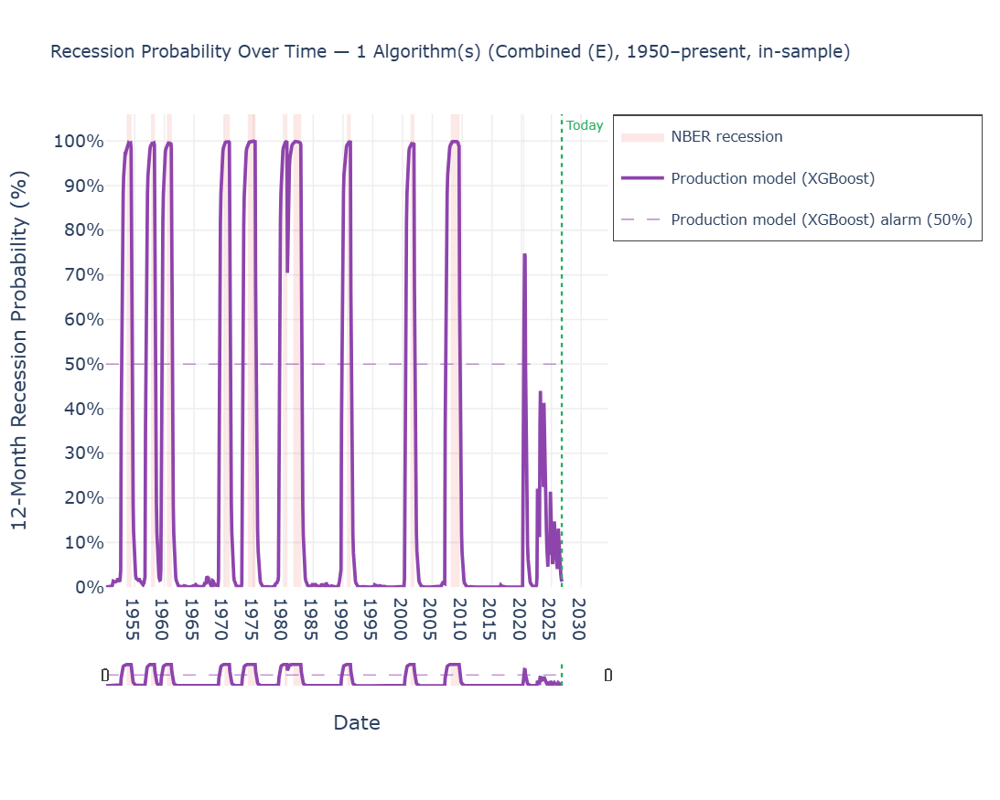
Fig. 1
Full history
Full history
04Methodology
The mechanisms that enforce temporal honesty.
4.1 — Walk-forward validation
Standard k-fold cross-validation is inappropriate for time-series macro data: training on post-2005 data to predict pre-2000 outcomes leaks future distributional information into the past. Walk-forward validation enforces a strict chronological constraint — each fold trains on all data up to a fixed cutoff and evaluates on all subsequent data. Cutoffs are placed after the resolution of one historical recession, producing 11 folds covering the full record. Each fold accumulates one additional recession episode in its training data, simulating the progressive accumulation of evidence that occurs in real-time deployment.
Label resolution: no row before its outcome is known (v2.1).
A training row dated m carries a label built from months m+1 … m+12, so it can only be used once those twelve months have passed. Each fold is cut twelve months after its recession ends — roughly when NBER announces the end — and tested on every month after the cut. v2.1 enforced the label rule by dropping the twelve rows before each cut (the fold embargo): fold 6's July 1981 row, for example, is labeled positive only because the August 1981 test recession begins one month later. That removed a genuine look-ahead. But because each fold model is then frozen for the whole expansion that follows, it also meant that no fold ever saw a single month of recovery. v2.1 reported the embargo as nearly free — average mature-fold AUC 0.959 → 0.955 — and the average hid a 21-month false alarm in 1984–86 (§4.7).
Recovery-month refresh (v4).
v4 keeps the rule and fixes the timing. During the first year after each cut, the fold model is refreshed monthly: test month cut + j is predicted by a model trained on rows up to trough + min(j − 1, 12), so each recovery month joins as soon as its own label has resolved. After twelve refreshes the model is frozen until the next fold takes over. The production model follows the same rule (§4.2). Why twelve, and how it was chosen, is §4.7.
4.2 — Structural safety mechanisms
The training cutoff: end of the last recession, plus its recovery (v3, v4).
Through v2.1 the production model trained only on data older than 24 months from the current date — a rolling T−24 window. v3 replaced that rule with a fixed anchor at the end of the most recent NBER recession, April 2020 (config.LAST_RECESSION_END). v4 extends the anchor by the same twelve recovery months the folds use (config.PRODUCTION_TRAIN_END, April 2021). The COVID censor described below covers every one of those months, so the effective last training month is still January 2019 and the live model is unchanged.
The cutoff satisfies the two label-integrity requirements the old one existed for. NBER revises USREC retroactively, so recent “no recession” rows may later flip to 1; and a row dated m asserts an outcome over months m+1 … m+12, a window that has not resolved for rows near today. Anchoring to a closed recession episode is strictly safer on both counts than anchoring to the calendar. When NBER dates the end of the next recession, its recovery months will join automatically, one per monthly run, as their labels resolve.
The anchor also keeps deployment and validation identical. The production model trains on exactly the rows of walk-forward fold 11's final model: the model that is deployed is the model that was validated. Under T−24 the deployed model and the fold models were different objects measured against a shared threshold, a mismatch quantified in §4.6. And because the production model never observes a month after January 2019, the entire post-2019 segment of the full-history chart is genuine out-of-sample prediction.
COVID censoring.
The period February 2019 through April 2021 is physically removed from the training matrix. Samples from early 2019 carry a recession label of 1 because COVID struck in Q1 2020, not because of any learnable cyclical deterioration; the 2020 recession was an exogenous biological shock; and v4 extends the window through April 2021 because twelve-month changes in early 2021 are measured against the lockdown months. Retaining the period would teach the model to associate ordinary cyclical weakness with pandemic-scale anomalies. The same window is excluded from false-positive counting and from every metric in §5.
Class weighting.
XGBoost's positive-class weight replaces synthetic oversampling, preserving the temporal integrity of the training data.
Forward-fill with cap.
FRED series are published asynchronously. When the most recent release for an indicator is unavailable, the system carries the last known value forward, capped at two months. This prevents pipeline failure from incomplete current data without admitting observations that are more than two months stale.
Publication-lag alignment (v2).
FRED series are stamped with their reference period, not their release date. March CPI carries a March 31 timestamp but is not published until mid-April; Q4 corporate profits carries a December 31 timestamp but is not released until late January. v1 indexed every series at its reference-period end, which silently exposed the model to data 1–3 months before it would have been observable in real-time deployment. v2 shifts series forward to reflect their actual publication lag: monthly series by two months, quarterly series by four. This eliminates a category of look-ahead leakage that was particularly acute for the quarterly indicators (SLOOS bank tightening, corporate profits) that the model relies on for the early stages of a contraction.
Strict prediction anchor (v2).
FRED quarterly series can extend the feature index past the current month — corporate profits, for instance, often publishes a forward-dated month-end stamp. v1's anchor logic only skipped the exact current month, which silently allowed future-dated rows to surface as the “current” inference under specific calendar conditions. v2 enforces a strict filter to the last complete month strictly before today, eliminating an entire class of forward-bias that could quietly contaminate the production probability.
4.3 — The EMA signal filter
Raw probability output from any macro model contains noise. A single month above the alarm threshold does not constitute a reliable signal; isolated spikes are common during mid-cycle slowdowns and rate-hike episodes that do not resolve into recessions. v2 uses an exponential moving average as the production filter — at each month, the filtered value is a weighted blend of the new raw probability and the prior filtered value, with the weight (α = 0.35) tuned so that roughly three sustained months of elevated raw probability are needed to cross the 50% alarm threshold.
The EMA is path-aware: a gradual 40→50% build-up over several months accumulates into the filtered series faster than a single-month spike that was at 0% the prior month. A sustained high signal crosses the alarm threshold sooner than a fixed-window confirmed filter would allow; an isolated spike, however large, decays before it can.
Why EMA replaces the prior confirmed filter
v1 used a confirmed-signal filter requiring N consecutive months above threshold before activating. It was robust but had two structural weaknesses: it was path-blind (a gradual 4-month build-up was treated identically to an isolated spike preceded by zeros), and it imposed a fixed activation delay regardless of signal strength.
The EMA filter resolves both. In benchmark testing on mature folds (4–11), it preserves the low false-alarm profile while recovering the 2001 Dot-Com recession that the confirmed filter missed entirely — the latter's required streak kept breaking against the noisier 2001 build-up.
Unlike a purely threshold-based post-filter, the EMA directly affects the AUC reported in walk-forward validation. AUC is computed on the EMA-smoothed probability series, not the raw model output; smoothing reduces month-to-month noise and produces a more stable ranking of pre-recession months vs. normal months, which raises AUC. This is the intended behavior — the EMA represents the operational signal the system produces, and AUC should reflect the quality of that signal.
Hysteresis emerges implicitly from the smoothing: a brief dip during a sustained high-EMA period cannot instantly reset the alarm, because the EMA carries prior history forward. No explicit Schmitt-trigger deactivation threshold is required — the integrator is itself the memory.
4.4 — Threshold calibration
A model outputs a probability; an alarm requires a threshold. The production threshold is fixed at 50% — selected by sweeping candidate levels over the OOS predictions from mature folds for the value that minimized dangerous false-positive streaks (sustained above-threshold EMA signals not followed by an NBER recession within 12 months) while preserving maximum recession coverage. The natural center of the probability scale satisfied both criteria, with a clean interpretation: the alarm fires when the model has genuine, balanced-evidence conviction rather than marginal elevation.
4.5 — Feature validation via Monte Carlo ablation
Before finalizing the production feature set, 25 candidate features across six domains were evaluated using a Monte Carlo ablation procedure. In each of 1,790 iterations, a random subset of candidates was added to the baseline matrix and the impact on AUC and false-positive rate was measured. Every candidate either degraded AUC, increased false-positive rate, or both. The dominant failure mode was multicollinearity: many candidates were overlapping proxies for the same underlying phenomenon, diluting signal without providing orthogonal information.
Three features showed marginal positive signal in isolation and were retained in the plus configuration after individual walk-forward confirmation.
4.6 — Auditing the cutoff: a T−24 walk-forward
The production cutoff (§4.2) did not move on principle. It moved because the previous rule was put through the validation harness and failed there.
The audit rebuilds the walk-forward the way T−24 builds production. In the standard harness each fold trains to the end of a completed recession; in the T−24 variant each fold instead trains to onset − 24 months for every recession in the record — which is what a T−24 production model would have looked like standing two years ahead of each episode. Everything else is held fixed: features, model, fold embargo, COVID censor, EMA filter, 50% threshold.
Table 3 — Recession coverage by training-cutoff rule (v3 audit)
| Episode | Recession-end cutoff | T−24 cutoff |
|---|---|---|
| 1970 | Detected | Missed |
| 1990 | Detected · 18 months lead | Detected · 14 months lead |
| 2001 | Detected | Missed |
| 2008 | Detected · 8 months lead | Detected · 6 months lead |
| Coverage | 7 / 7 | 5 / 7 |
| Average lead, detected episodes | 12.4 months | 12.2 months |
Only the episodes where the two designs differ are listed. The T−24 construction catches five of seven countable recessions where the recession-cutoff construction catches seven of seven; 1970 and 2001 are missed outright, not merely shortened.
Average lead over the episodes each design does catch is nearly identical — 12.2 against 12.4 months — and that is the point. The difference is not in how early the alarm fires. It is in whether it fires at all. The same gap appears on live data: run on identical recent inputs, the T−24 model was roughly five times calmer than a recession-cutoff model (mean raw probability 1.87% against 8.93% over September 2024 – July 2026), so the 50% threshold — calibrated on fold-model output (§4.4) — was being applied to a systematically quieter model. Anchoring the cutoff to the last recession removes the mismatch by construction. It is also the reason the recovery months of §4.7 are capped at twelve: training much deeper into an expansion drifts back toward this design.
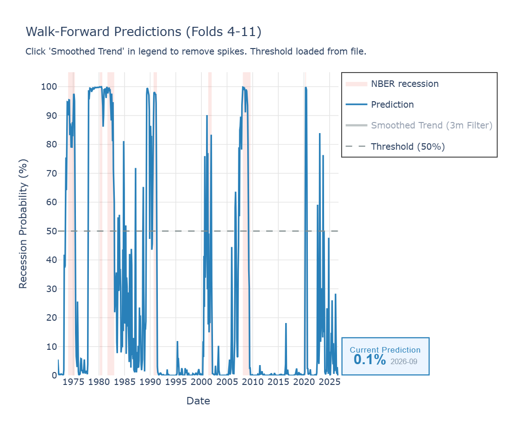
Fig. 2
Raw signal
Raw signal
Walk-forward predictions, folds 4–11, before any filtering. Each month is predicted by the fold model that would have been live, including the monthly refreshes of the first recovery year. Mid-cycle spikes are visible — short exceedances during episodes that did not resolve into recessions.
plot history-folds · dataset E · production XGBoost · feature-set plus · raw
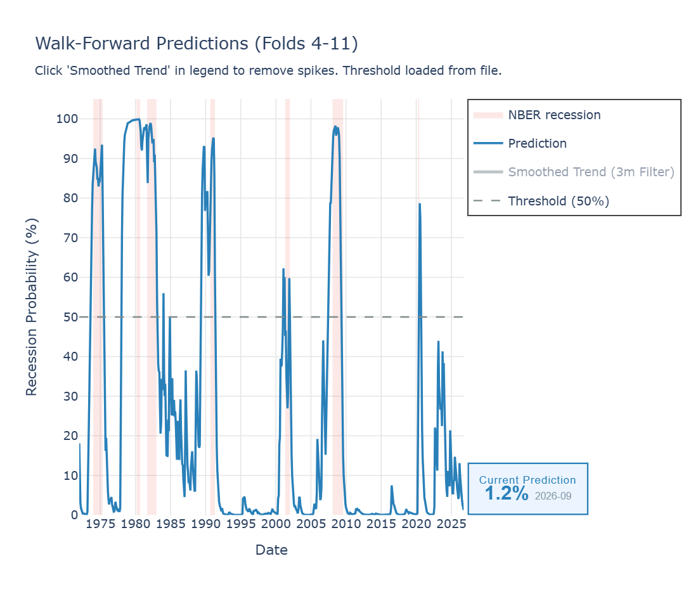
Fig. 3
EMA-filtered
EMA-filtered
The same folds after the EMA filter (α = 0.35) — the series that is published and scored in §5. Short exceedances are suppressed; structural alarm periods (1973, 1980, 1981, 1990, 2001, 2007) remain. The 2001 build-up crosses threshold three months before the recession begins.
plot history-folds · dataset E · production XGBoost · feature-set plus · --ema
4.7 — Fixing 1985: a pre-registered test of the recovery months
The v2.1 embargo was correct, and it also introduced the walk-forward's worst flaw. Before it, the 1984–88 out-of-sample signal peaked at 42.9%. Under it — same data, same model — the signal climbed to 81.8% and stayed above 50% for 21 consecutive months, from November 1984 to July 1986. The 2001 and 2008 warnings were unchanged.
The cause is fold 7, which makes every prediction from December 1983 to March 1992. Its cut is November 1983, and the embargo stops its training at November 1982, the last month of the 1981–82 recession. Of the 45 months before that point, 44 are labeled “recession ahead”, with the Fed funds rate averaging about 13.6%. The twelve rows the embargo removed — December 1982 to November 1983, rates near 9%, no recession — were the model's only examples of high rates in an expansion. Without them, “high rates mean recession” is a rule with no exceptions in its training data. SHAP attributes about half of the 1984–86 rise to the Fed funds level alone (+1.04 of +1.92 log-odds), with CPI and oil next.
Those twelve rows were not unknowable forever, only for a year: from November 1984 their labels were settled. The fix is to use them as soon as they are — the refresh rule of §4.1. How many recovery months to admit is a parameter that could easily be tuned until 1985 disappears, so it was chosen under a rule written down and committed before the test ran: candidates n = 0, 3, 6, 9 and 12 on five random seeds; every recession caught on every seed, then the fewest false-alarm months, then the longest average lead, then PR-AUC, with near-ties going to the smaller n.
Table 4 — Recovery months tested · published-series metrics, mean of five seeds
| Recovery months n | False-alarm months | Months ≥ 50%, 1984–88 | ROC-AUC | PR-AUC | Avg lead |
|---|---|---|---|---|---|
| 0 (v3 rule) | 47.0 | 32.4 | 0.929 | 0.786 | 11.6 |
| 3 | 31.2 | 23.2 | 0.939 | 0.800 | 12.0 |
| 6 | 15.4 | 7.4 | 0.944 | 0.805 | 11.6 |
| 9 | 12.2 | 4.2 | 0.942 | 0.803 | 11.4 |
| 12 (selected) | 10.0 | 1.8 | 0.946 | 0.808 | 11.4 |
Every value of n catches all six recessions on all five seeds. The rule selects n = 12, the largest value allowed; the range was capped there on purpose (§4.6). Seed-to-seed spread narrows as n grows: false-alarm months range 10–24 at n = 6 against 8–13 at n = 12. Published figures use the production seed, whose values differ slightly from these means. Protocol and harness: experiments/recovery_months/, branch exp/recovery-months.
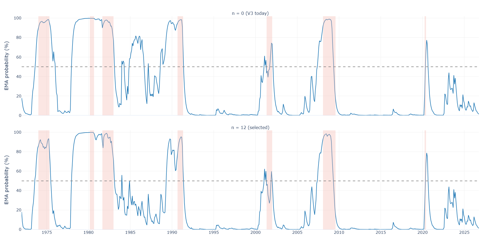
Fig. 4
Recovery months
Recovery months
Walk-forward EMA signal, folds 4–11, under the v3 rule (top, n = 0) and the v4 recovery-month refresh (bottom, n = 12), production seed. The 1984–86 plateau is gone; what remains are single months in December 1983 (56%) and November 1984 (50.05%). Everything from 2021 on is identical.
experiments/recovery_months · branch exp/recovery-months
What remains of 1983–84 is two isolated months: December 1983 at 56%, the first month after fold 7's cut, before any recovery month's label has resolved; and November 1984 at 50.05%, after the Fed had pushed rates back toward 11% and the curve had gone nearly flat. Both fall back the following month (§7.3). The cost is small and measured. Averaged over the five seeds, the lead shortens from 11.6 to 11.4 months and sensitivity at 50% dips from 83% to 80%; on one seed in five the 2008 warning shrinks to 2 months (it stays at 8 on the production seed). None of it touches the live model: every COVID-recovery month is censored, so production is unchanged and every reading since 2021 is identical.
05Results
Out-of-sample performance, measured on what is published.
Through v3 the headline numbers averaged each fold's metrics over every later decade — fold 4, trained through 1971, was scored on 2023. That measures how a model ages, not what was published. v4 headlines the stitched series instead: each month is scored by the fold model that would have been live at the time, exactly as Fig. 3 draws it, from December 1971 to the last month with a resolved label (October 2025). The COVID window (February 2019 – April 2021) is excluded throughout. A recession counts as caught if the EMA signal crosses 50% in the 18 months before its onset; a false-alarm month is any month above 50% outside every window running from 18 months before an onset to 3 months after the recession ends.
5.1 — The published series
Table 5 — Published out-of-sample series · Dataset E · EMA filter (α = 0.35) · production seed
| Metric | v3 rule | v4 | Wright (2006) |
|---|---|---|---|
| Recessions caught | 6 / 6 | 6 / 6 | 6 / 6 |
| Lead, months (1973 · 1980 · 1981 · 1990 · 2001 · 2008) | 4 · 18 · 18 · 18 · 3 · 8 | 5 · 18 · 18 · 16 · 3 · 8 | 8 · 17 · 18 · 18 · 8 · 14 |
| Average lead, months | 11.5 | 11.3 | 13.8 |
| False-alarm months, 1971–2025 | 46 | 10 | 28 |
| False-alarm months since 1985 | 26 | 0 | 22 |
| ROC-AUC | 0.934 | 0.948 | 0.840 |
| PR-AUC | 0.801 | 0.813 | 0.747 |
| Sensitivity at 50% | 81.9% | 81.2% | 68.8% |
| Specificity at 50% | 85.7% | 94.0% | 90.2% |
| Brier score | 0.101 | 0.072 | 0.124 |
The v3-rule and v4 columns are the same model, data and seed; only the training rule differs. Leads are capped at 18 months by the detection window. Eight of v4's ten false-alarm months are December 1977 – July 1978, the 1980 warning arriving 26 months before onset; the other two are the 1983–84 months of §4.7. From January 1985 onward the v4 series has none at all, through four recessions, the 2022–23 stress test and the live period to date; the v3 rule has 26 in 1985–89 and the benchmark 22, in 1989 and 2023–24. The benchmark is described in §5.5.
ROC-AUC asks whether pre-recession months are ranked above calm ones; PR-AUC asks the same of the rare class and is the stricter of the two when positives are scarce (Davis & Goadrich, 2006). Sensitivity and specificity are measured at the 50% alarm line. The Brier score, the mean squared distance between the probability and the outcome, improves the most (0.101 → 0.072), but it should be read with care: because the model is class-weighted (§2), its output is a risk score on the threshold's scale rather than a calibrated frequency.
5.2 — Fold by fold: how a model ages
The per-fold view, reported as the headline through v3, scores each fold model on all later data — far beyond the segment in which it would ever be used. It remains a useful stress test of how a model ages.
Table 6 — Per-fold results · each fold scored on all later data · EMA filter
| Fold | Recession ended | Recessions in training | AUC | FP / yr |
|---|---|---|---|---|
| 4 | Nov 1970 | 4 | 0.940 | 0.2 |
| 5 | Mar 1975 | 5 | 0.905 | 0.3 |
| 6 | Jul 1980 | 6 | 0.957 | 0.1 |
| 7 | Nov 1982 | 7 | 0.977 | 0.0 |
| 8 | Mar 1991 | 8 | 0.981 | 0.0 |
| 9 | Nov 2001 | 9 | 0.990 | 0.0 |
| 10 | Jun 2009 | 10 | n/a † | 0.1 |
| 11 | Apr 2020 | 11 | n/a † | 0.0 |
| Average (mature folds 4–9) | 0.958 | 0.1 | ||
† No completed out-of-sample recession is eligible for AUC scoring after 2009 (COVID-2020 is excluded as exogenous). On identical data the v3 rule averages 0.954; fold 7, the 1985 culprit, moves from 0.943 and 0.2 FP/yr to 0.977 and 0.0. Across folds 8–11 the months above 50% outside any recession window total 6 — in 2006, early 2023, and one month after 2001 — down from 15. Average advance warning in this view, excluding COVID: 13.2 months.
Average mature-fold AUC, v1 → v4 · where the change comes from
v1 (paper, confirmed filter) → 0.827
+ publication-lag alignment (§4.2) → 0.835 +0.008
+ EMA filter (§4.3) → 0.959 +0.124
+ fold embargo (§4.1, v2.1) → 0.955 −0.004
+ recovery-month refresh (§4.7, v4) → 0.958 +0.004 on identical data
The EMA filter remains the dominant driver; because AUC is computed on the smoothed series, it should be compared against other smoothed-signal AUCs, not raw-probability benchmarks. The embargo's −0.004 looked like proof that nothing had been hiding at the fold boundaries. The average concealed the 1984–86 false alarm, which only the stitched series made visible — the main reason v4 headlines the published series.
5.3 — The 2001 recession: caught, with a short lead
In v1, fold 8 (trained through March 1991) assigned only ~35% to the 2001 Dot-Com recession and the confirmed filter never activated. From v2 on — same model, same training data, EMA filter — the signal crosses threshold in January 2001, 3 months before the recession begins. The 2001 build-up arrived through several months of mid-50s–mid-60s readings, repeatedly interrupted by lower months that broke the confirmed filter's N-consecutive streak. The EMA accumulates that build-up smoothly instead of resetting on each dip, recovering a weak-but-genuine signal that v1's filter discarded.
The lead time is shorter than at other detections in the modern record for reasons explained in §7.1: the most diagnostic features for a corporate-led, equity-and-CapEx contraction had observed at most one prior recession by the time fold 8 trained. The model could not produce a strong signal, but the signal it did produce is no longer thrown away.
5.4 — The 2022–23 stress test
The 2022–23 period was the most demanding false-positive challenge in the modern dataset. The Federal Reserve raised rates by 525 basis points in 16 months; the 10Y–2Y yield curve inverted to its deepest level since 1981; and surveyed economists put the odds of a recession above 60%. Most quantitative macro models — including the univariate yield-curve heuristic — generated sustained false-positive signals.
The production signal rose to 44% in February 2023 but never crossed the 50% threshold. The SHAP decomposition of that month shows why, and corrects v3, which attributed the rise to the Fed funds level. The inverted curve (+0.46) and the pace of hikes (fedfunds_12m_chg, +0.42) did push up, but the largest upward pushes came from falling corporate profits (−3% year over year, +0.75), depressed consumer sentiment (+0.57) and rising involuntary part-time work (+0.55). The Fed funds level pushed down (−0.60): at 4.3% it is ordinary by the standards of the 1954–2019 training record (§7.4). Low jobless claims (−0.42), a Sahm reading of zero (−0.36) and positive industrial production (−0.25) held the line. In the per-fold view, two older fold models — fold 8, trained through 1991, and fold 10, through 2009 — brush above 50% for one or two months in early 2023 (peaks near 58%); the fold-11 model and the production model stay below throughout.
5.5 — Against a classic benchmark
The natural question about a 57-feature model is whether it beats a simple one. The literature's standard simple model builds on the yield-spread probits of Estrella and Mishkin (1998). Wright (2006) shows that adding the level of the nominal Fed funds rate to the 3-month / 10-year term spread improves both in-sample fit and out-of-sample accuracy, and that the strongest recession signature is “an inverted yield curve with a high level of the nominal funds rate.” We ran that two-variable probit through the identical walk-forward — same folds, recovery-month refresh, COVID exclusion, EMA filter, 50% line and metrics, with its inputs aligned exactly like the production pipeline's Fed funds series. Only the model and its inputs differ, so any difference in Table 5 comes from the model, not the test.
The benchmark catches all six recessions too, and warns earlier: 8 months before 2001 against 3, and 14 before 2008 against 8, because the yield curve inverted well ahead of both. It pays for that with 28 false-alarm months — 21 of them consecutive, from April 2023 to December 2024, the inversion that did not become a recession — and with lower accuracy on every month-level measure: ROC-AUC 0.840, PR-AUC 0.747, sensitivity 69%. The multidimensional model gives up a few months of lead on two episodes for a far quieter signal, and in 2023–24 the quiet signal was the right one.
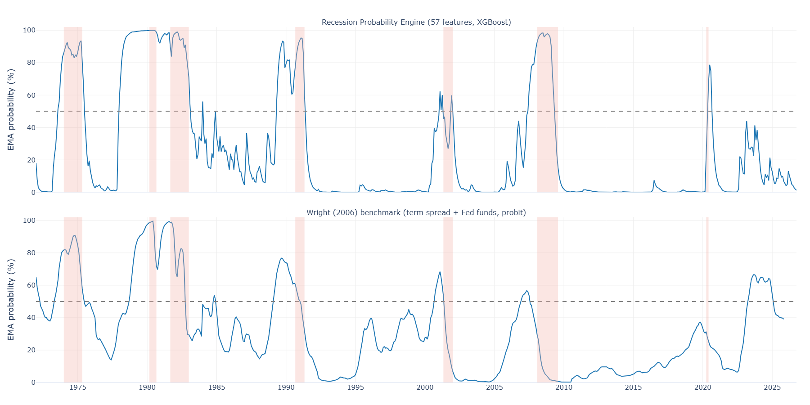
Fig. 5
Benchmark
Benchmark
EMA signal, folds 4–11, for the production model (top) and Wright's two-variable probit (bottom), both run through the same walk-forward. The benchmark's smoother curve rises earlier before 2001 and 2008 but stays above 50% from April 2023 to December 2024.
experiments/benchmark_wright · branch exp/recovery-months
Versus the univariate inversion rule.
The 10Y–2Y Treasury yield-curve inversion is the most widely cited single-variable recession predictor. A naive rule — “alarm when the spread turns negative” — has historically preceded U.S. recessions with reasonable consistency. In 2022–23, however, it generated a sustained false alarm exceeding 26 months. Over the same period, this model's production signal did not activate.
The structural explanation is not that the yield curve is wrong, but that it is context-free. A curve inversion in a full-employment economy with accelerating industrial production is fundamentally different from an inversion accompanied by rising unemployment and tightening credit. A multidimensional model can represent that distinction; a univariate threshold cannot.
Versus published results.
Comparisons across papers are rough — different samples, frequencies, horizons and evaluation designs — so they are offered as orientation, not a ranking. Wright reports out-of-sample root mean square errors of 0.33–0.40 for recursive recession-probability forecasts over 1980–2005, and 0.34 for his best four-quarter models. Scored on the same window, the v4 series has an RMSE of 0.25 (0.23 when averaged to quarters) and a ROC-AUC of 0.967, against an RMSE of 0.33 under the v3 rule. Yazdani (2026), revisiting machine-learning recession models on 1959–2024 data, finds tree ensembles strongest, with out-of-sample AUC above 0.9 — the range in which this system sits.
06Explainability
Every probability comes with its decomposition.
Because the system operates as an early-warning tool, explaining why the probability is elevated is as operationally important as the probability itself. Every monthly inference is accompanied by a SHAP (SHapley Additive exPlanations) decomposition across three analysis layers, and each month's full decomposition is now also stored as data, not only as a chart.
6.1 — Global feature importance
Ranked by mean absolute SHAP value, the most influential features are the federal funds level (fedfunds_lvl), housing permits (permit_yoy) and corporate profits (corp_profits_yoy), followed by the yield-curve slope (spread_lvl), initial jobless claims (icsa_yoy) and housing starts (houst_yoy). This hierarchy was not encoded manually — the model learned it from the data alone. It is consistent with established macro theory (the cost of capital leads; the real economy confirms), which is reassuring, though not by itself proof of causal structure.
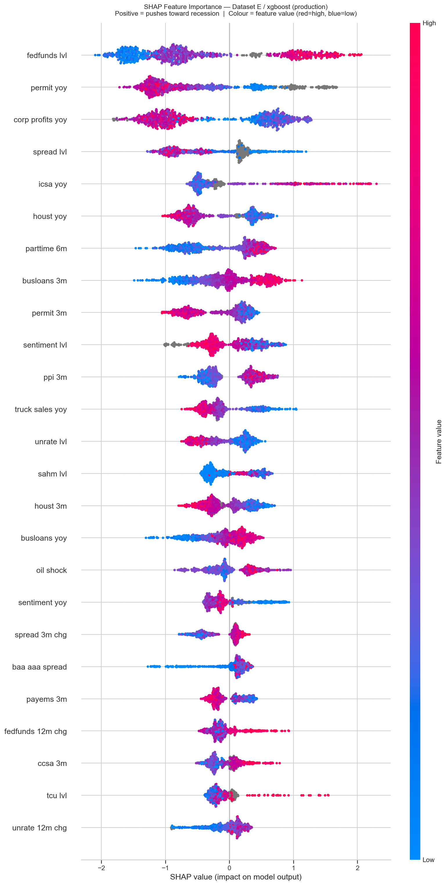
Fig. 6
SHAP summary
SHAP summary
Mean absolute SHAP contribution across all months, ranked, for the production model. The Fed funds level, housing permits and corporate profits dominate the top of the ranking, followed by the yield-curve slope and labor-market signals.
plot shap-summary · dataset E · production XGBoost · feature-set plus
6.2 — Historical timeline
Feature contributions plotted as time series across the full historical record reveal the recession-specific signature of each episode. The 2008 recession shows housing starts and permits contributing sharply from 2006–07, well before the employment data broke. The 1980 and 1981 recessions show the federal funds rate and monetary tightening as the dominant driver. The 2001 episode shows corporate profits and an inverted curve activating while consumer indicators remained relatively contained — the distinctive fingerprint of an equity and capital-expenditure bust.
6.3 — Monthly waterfall
For any given month, the SHAP waterfall chart shows the signed contribution of each feature to that month's probability — how much each indicator pushed the estimate above or below the historical base rate. This transforms the black-box probability into an interpretable macroeconomic summary: a decision-maker can identify exactly which sectors are driving the current risk assessment.
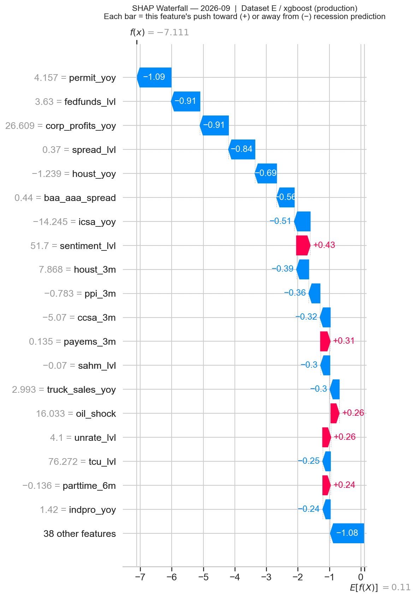
Fig. 7
Waterfall
Waterfall
SHAP waterfall for September 2026, f(x) = −7.11. Each bar is one feature's signed push toward (red) or away from (blue) recession prediction, applied in sequence to the base rate. The probability is held down by building permits at +4.2% year over year (−1.09), the Fed funds level at 3.63% (−0.91), corporate profits at +26.6% (−0.91), a positively sloped yield curve (−0.84) and housing starts (−0.69). The largest upward push, consumer sentiment at 51.7 (+0.43), is far outweighed: 17 features push up by +2.2 in total, 36 push down by −9.4. The published reading is 1.25%. Consistent with a non-recessionary regime.
Note: the strict prediction anchor (v2) ensures this month is always the last complete month strictly before the run date.
plot shap-waterfall · dataset E · production XGBoost · date 2026-09
Note: the strict prediction anchor (v2) ensures this month is always the last complete month strictly before the run date.
plot shap-waterfall · dataset E · production XGBoost · date 2026-09
6.4 — Fingerprints of past recessions: a regime shift around 2000
Running the waterfall on individual pre-recession months reveals the distinctive macroeconomic signature of each episode — and a structural break in those signatures around the year 2000. Pre-2000 recessions are dominated by classic monetary and capacity-tightening features: the 1989 decomposition is led by fedfunds_lvl, the 1973 episode by capacity utilization (tcu_lvl) and business-loan growth at the peak of an overheating cycle. From 2000 onward, that classic signature recedes; corp_profits_yoy takes over as the single dominant driver.
The model learned this regime shift directly from the data. It is consistent with the macro literature: the post-Volcker monetary regime stabilized inflation, lowered the relative volatility of policy rates, and shifted business-cycle dynamics toward credit and corporate-balance-sheet channels. All panels below are computed with the current production model; the four historical months lie inside its training data, so they show what it learned.
September 1989
f(x) = +4.97
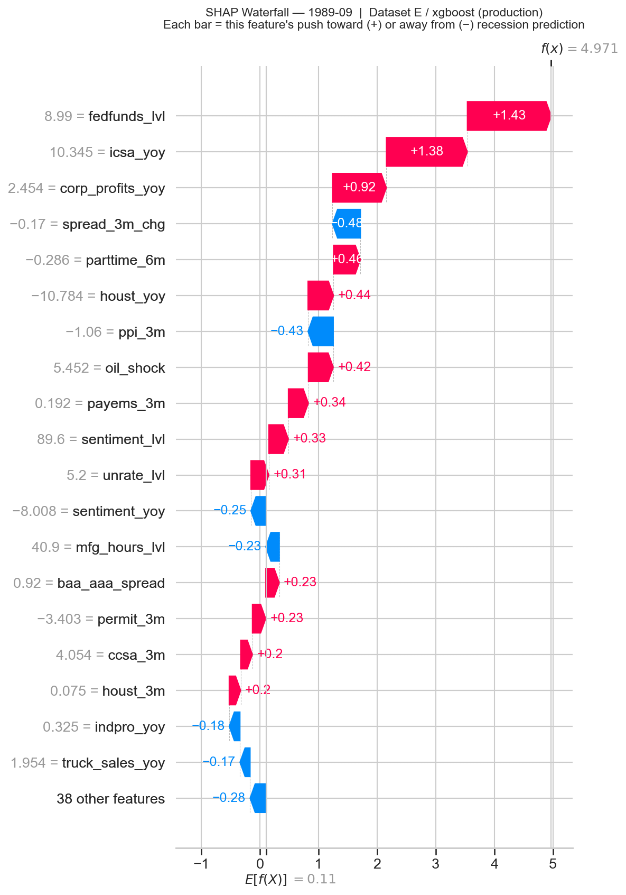
Top driver — fedfunds_lvl · +1.43
Eleven months before the 1990 recession. The Fed funds rate at 8.99% leads, with initial jobless claims (icsa_yoy, +1.38) close behind and corporate profits (+0.92) confirming. A monetary-policy story.
February 1973
f(x) = +4.51
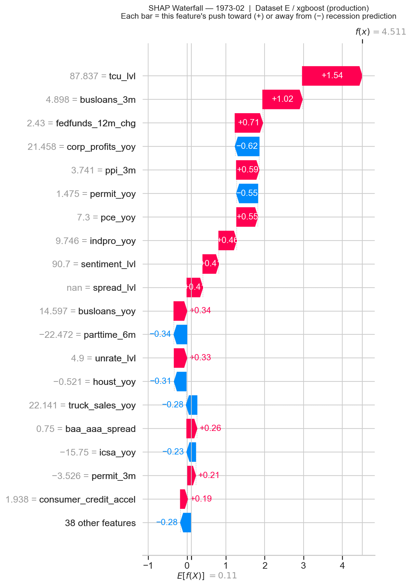
Top driver — tcu_lvl · +1.54
Ten months before the 1973–75 recession. Capacity utilization at 87.8% — a peak-of-cycle overheating reading — leads, followed by business-loan acceleration (+1.02) and the pace of rate hikes (+0.71). A pre-Volcker overheating signature where capacity and credit lead the monetary rate.
February 2007
f(x) = +4.79
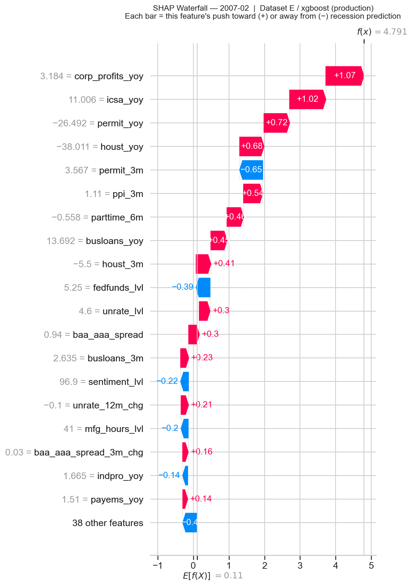
Top driver — corp_profits_yoy · +1.07
Eleven months before the Great Recession. Corporate profits, jobless claims (+1.02), housing permits (+0.72) and housing starts (+0.68) push positive in concert — the housing-and-credit GFC signature. fedfunds_lvl at 5.25% pulls the probability down (−0.39).
May 2000
f(x) = +3.54
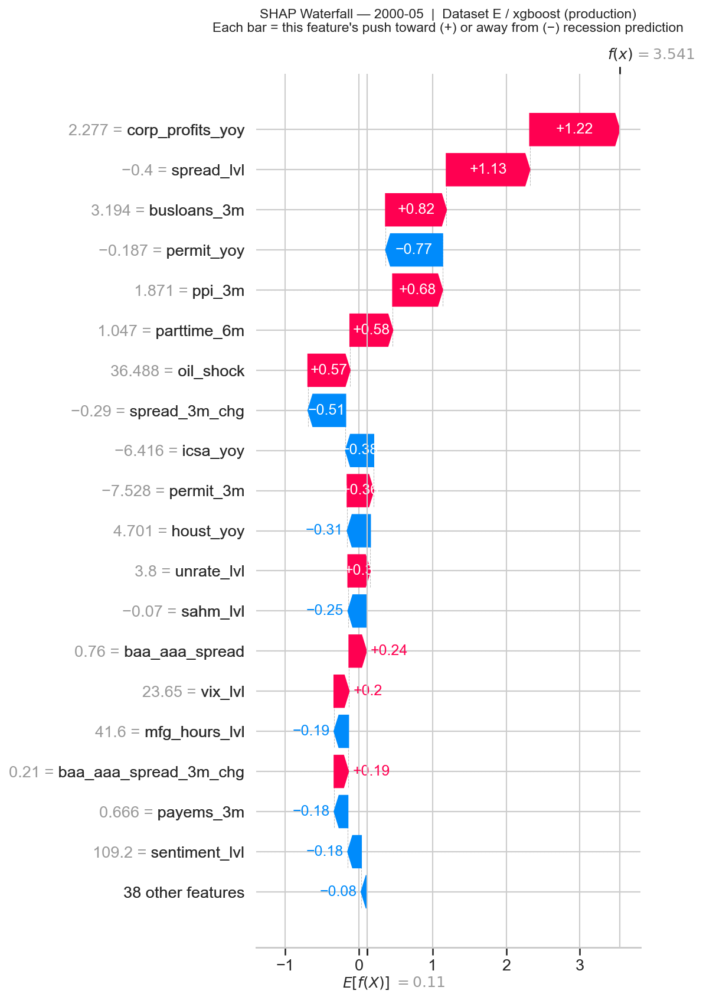
Top driver — corp_profits_yoy · +1.22
The first recession of the new regime. Eleven months before the Dot-Com contraction, corporate profits, an inverted curve (spread_lvl, +1.13) and business-loan growth (+0.82) lead; fedfunds_lvl at 6.02% contributes only +0.12 — a fraction of its 1989 weight.
Read across the four panels: the dominant feature shifts from capacity and the funds rate (1973, 1989) to corp_profits_yoy (2000, 2007). The model is not just picking different signals — it is picking the same hierarchy that the macro regime itself produced.
The four panels above show what the model learned from past recessions. The panel below is different: it is a prediction for a month after the production model's training data ends (January 2019). It shows what the model was signalling, not what it absorbed in training.
March 2025
f(x) = −2.85
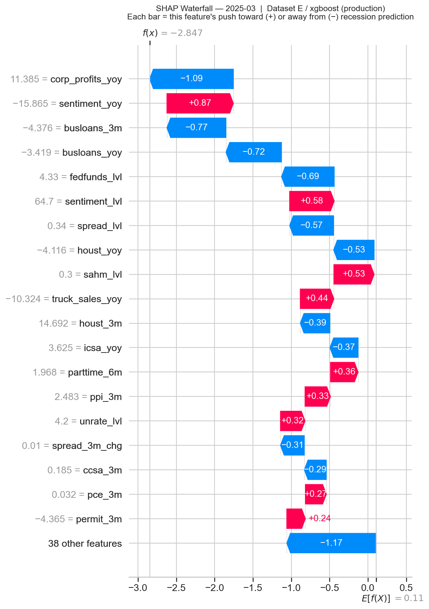
Top suppressor — corp_profits_yoy · −1.09
A live prediction during a period of macro stress that did not become a recession. Corporate profits, business-loan growth (−0.77 and −0.72 on its three-month and annual changes) and the Fed funds level (−0.69) push the probability down; falling consumer sentiment pushes up (+0.87 on its annual change, +0.58 on its level) but is outweighed. The EMA filter never approaches threshold.
07Limitations
What the system cannot do — by design.
7.1 — The 2001 walk-forward anomaly: caught, but barely
The system detects the 2001 Dot-Com recession in fold 8 (trained through March 1991, plus its recovery year) with 3 months of lead — substantially shorter than at other modern episodes, and the underlying signal never climbs as high as it does at other recessions. The previously-reported v1 “miss” was, mechanically, the confirmed filter discarding a weak-but-genuine signal whose month-to-month variability kept resetting its consecutive-month counter; the EMA's continuous accumulation captures that same signal without requiring uninterrupted threshold exceedance.
The structural model-level argument behind the weakness remains valid. The 2001 recession was a localized corporate equity bust, not a broad consumer or housing contraction. The most diagnostic features for that type of event — High Yield OAS (from 1996), SLOOS bank tightening (from 1990), capital-goods orders (from 1992) — had recorded at most one recession episode by the time fold 8 was trained. A model that has never observed a “CapEx bust while consumers are healthy” scenario in its training history cannot be expected to produce a strong signal for it. The simple yield-curve benchmark warns five months earlier here (§5.5) — at the price of a two-year false alarm in 2023–24.
7.2 — The cost of the fixed cutoff: no post-2020 learning
The recession-end cutoff buys deployment/validation identity at a real price, and the price grows every month. v4 extends it by twelve recovery months, but for COVID every one of them falls inside the censor, so the production model's last training observation is still January 2019 — over seven years before the current inference — and it will stay there until NBER dates the end of another recession.
The model has therefore never seen 2021–2024 — not the post-pandemic inflation surge, not the fastest tightening cycle since Volcker, and, most relevant to reading its current output, not the 2022–23 episode in which a deep and sustained yield-curve inversion, the single most-cited recession indicator, resolved without a recession. A near-miss is the most informative negative in the record, and the production model is trained on none of the recent ones.
The consequence is visible and directional. In the v3 comparison, live readings were several times higher than under T−24: the July 2026 filtered probability was 2.96% against 0.88%, and the mean monthly reading since September 2024 9.52% against 2.12%. This is not new information about the economy — the inputs are unchanged. It is the removal of a suppression the old cutoff was silently applying, and it should be read as the signal arriving on the same scale as the validated one. Under both cutoffs the signal remains far below the 50% threshold, and no recession is indicated.
The honest statement of the tradeoff: the system is being asked to recognise a 2026 recession using a feature-to-outcome mapping estimated through January 2019, in exchange for a model whose behaviour is exactly what §5 reports. The limitation has a defined expiry — the cutoff advances at the end of the next recession, and its recovery months follow as their labels resolve — but that expiry arrives, by definition, too late to help with the recession that triggers it.
7.3 — Two months left in 1983–84
The recovery-month refresh removes the 1984–86 false alarm, but not every crossing. December 1983 (56%) is the first month fold 7 is used, before any recovery label has resolved: nothing the model could legitimately know would have told it the economy had healed. November 1984 (50.05%) followed the Fed's push back toward 11% and a nearly flat curve — close to the configuration Wright identifies as the strongest recession signature. Both are single months. Removing them would mean either giving the model hindsight or adding a persistence rule that delays every genuine warning by a month, so they are disclosed instead.
7.4 — The Fed funds level is read against the training era
fedfunds_lvl is the model's most important feature (§6.1), and its meaning depends on the rates a model has seen. Fold 7, trained only through the Volcker years, read 8% as danger in 1985; the production model, trained on 1954–2019, reads 4–5% as ordinary, and in 2022–23 the level was the second-largest force holding the signal down (§5.4). Dropping the feature removes the 1985 problem in the walk-forward, but in our tests it also made the live model sit above 50% for every month of 2023. We keep it — Wright (2006) finds the nominal level informative beyond the spread — and flag the dependency: an expansion with persistently higher rates than the training record would be a regime the model has not seen.
7.5 — Scope
This system produces a single output: the probability that an NBER-defined recession will occur within the next 12 months. It does not forecast recession depth, duration, sector composition, equity-market performance, or GDP growth rates. It is an early-warning signal, not a macroeconomic model.
7.6 — Feature-selection ceiling
The production feature set was fixed via the Monte Carlo ablation procedure described in §4.5, but that procedure is itself a heuristic. A more exhaustive search — a deeper Monte Carlo budget, or a principled ablation algorithm with stronger statistical guarantees — would almost certainly surface a feature configuration with better out-of-sample behavior than the one shipped here. At the current stage of the work I was not able to achieve those better results; the plus set is the best configuration recovered under the available compute and search budget, not a proven optimum. The same caution applies to every setting chosen by looking at the walk-forward — threshold, filter, feature set: with six out-of-sample recessions, a backtest can reward luck. The v4 recovery-month choice was made under a pre-committed rule for exactly that reason.
08Conclusion
Architectural honesty over algorithmic complexity.
This project demonstrates that a disciplined, temporally honest machine-learning pipeline can produce a credible and operationally useful early-warning signal for U.S. business cycles. The key contributions are architectural rather than algorithmic:
- Walk-forward validation that mirrors deployment chronology: every label is used only once its outcome has resolved (v2.1), and each fold learns from the recovery as those labels arrive (v4) — on final-vintage FRED data by design, with revisions treated as measurement noise.
- Explicit structural mechanisms against label leakage, retroactive revision, exogenous contamination and publication-lag look-ahead, plus a strict prediction anchor on the production inference.
- An EMA signal filter that converts raw monthly probabilities into operational alarms in a path-aware way — sensitive to gradual build-ups, robust against isolated spikes.
- Decisions tested in the open: the recovery-month rule was chosen by a test whose selection rule was committed before it ran, and the model is compared with the literature's standard benchmark through the identical walk-forward.
- Full SHAP explainability connecting each monthly probability to its macroeconomic drivers, stored month by month as data.
The resulting system catches all six countable recessions in its out-of-sample record with an average 11.3 months of warning, ranks months with ROC-AUC 0.948 (PR-AUC 0.813), and has not been above the alarm line without a recession ahead since November 1984 — 10 such months over the whole record, down from 46 under the v3 rule, against 28 for a classic yield-curve model run through the same test. It withstood the most demanding false-positive environment in recent decades — the 2022–23 rate-hike cycle — without the production signal activating. It does this not by being more complex than the yield-curve heuristic, but by being more complete: contextualizing any single signal within the full macroeconomic environment, and translating raw monthly probabilities into operational alarms with a path-aware filter that respects both the integrity of a build-up and the noise of a spike.
References
- Davis, J., & Goadrich, M. (2006). The relationship between precision-recall and ROC curves. Proceedings of the 23rd International Conference on Machine Learning.
- Estrella, A., & Mishkin, F. S. (1998). Predicting U.S. recessions: Financial variables as leading indicators. Review of Economics and Statistics, 80(1), 45–61. (NBER Working Paper 5379, 1995.)
- Wright, J. H. (2006). The yield curve and predicting recessions. Finance and Economics Discussion Series 2006-07, Federal Reserve Board.
- Yazdani, A. (2026). Machine learning and deep sequence models for US recession prediction: A redux. Preprints.org, May 2026.
ATechnical configuration
Appendix: at a glance.
| Parameter | Value | Rationale |
|---|---|---|
| Algorithm | XGBoost (GPU) · single model | Best AUC; NaN-native; SHAP-compatible |
| Feature set | Dataset E · plus · 57 features | Ablation-validated |
| Horizon & label | 12 months; 1 if any NBER month in t+1 … t+12 | Standard business-cycle lead time |
| Training cutoff | Last recession end + 12 recovery months (2021-04) | Same rows as fold 11's final model |
| Effective last month | January 2019 | COVID censor covers the recovery months |
| Fold rule | Trough + up to 12 recovery months, each once resolved | No look-ahead; every fold sees a recovery |
| COVID exclusion | Feb 2019 – Apr 2021 | Excluded from training and every metric |
| Imbalance handling | Class weighting | No synthetic oversampling |
| Signal filter | EMA, α = 0.35 | Path-aware; recovers 2001 |
| Series alignment | Monthly +2 mo, quarterly +4 mo | No publication-lag look-ahead |
| Alarm threshold | Fixed at 50% | Minimizes dangerous OOS false-positive streaks |
| Validation | Expanding walk-forward, 11 folds | Scored on the published series |
| Explainability | SHAP — summary, timeline, waterfall | Stored monthly as data |
| Data source | FRED API · 47 series | Cached locally; refreshed monthly |